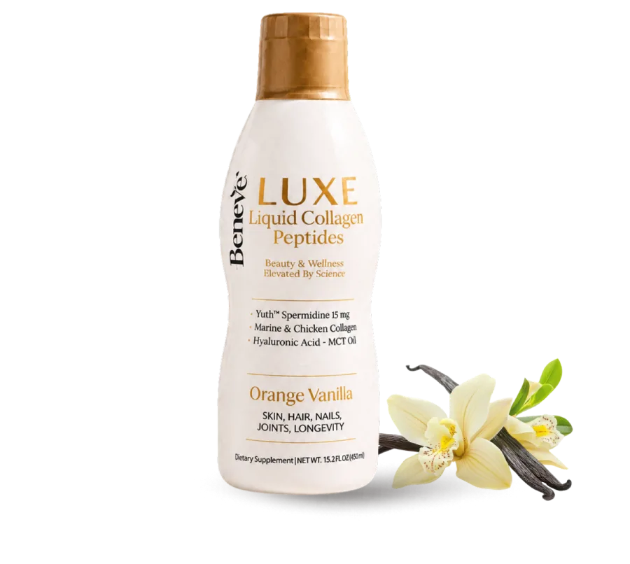
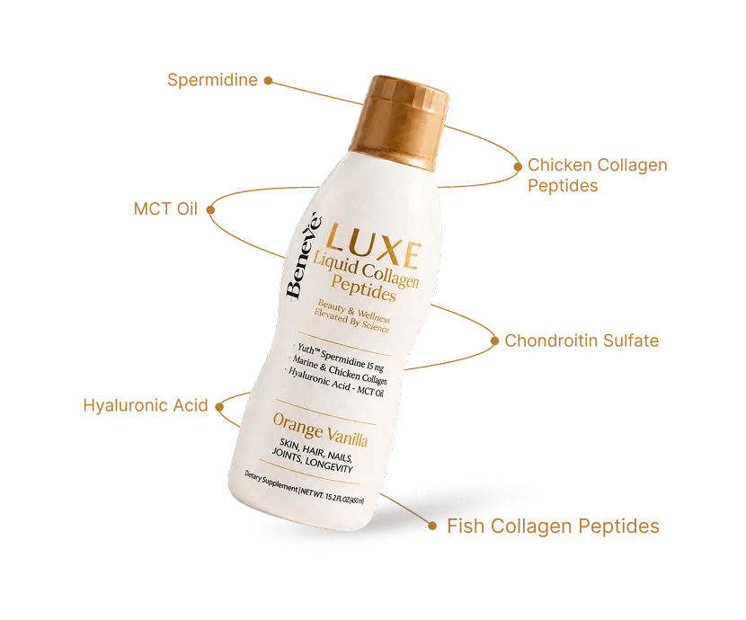
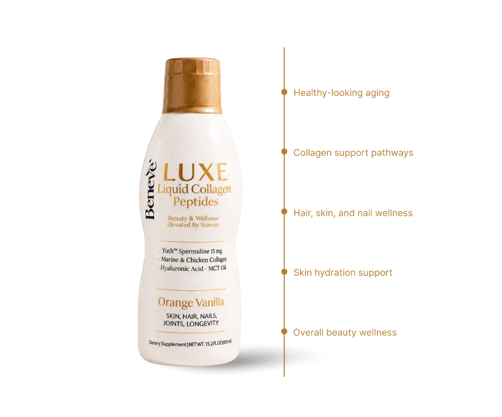
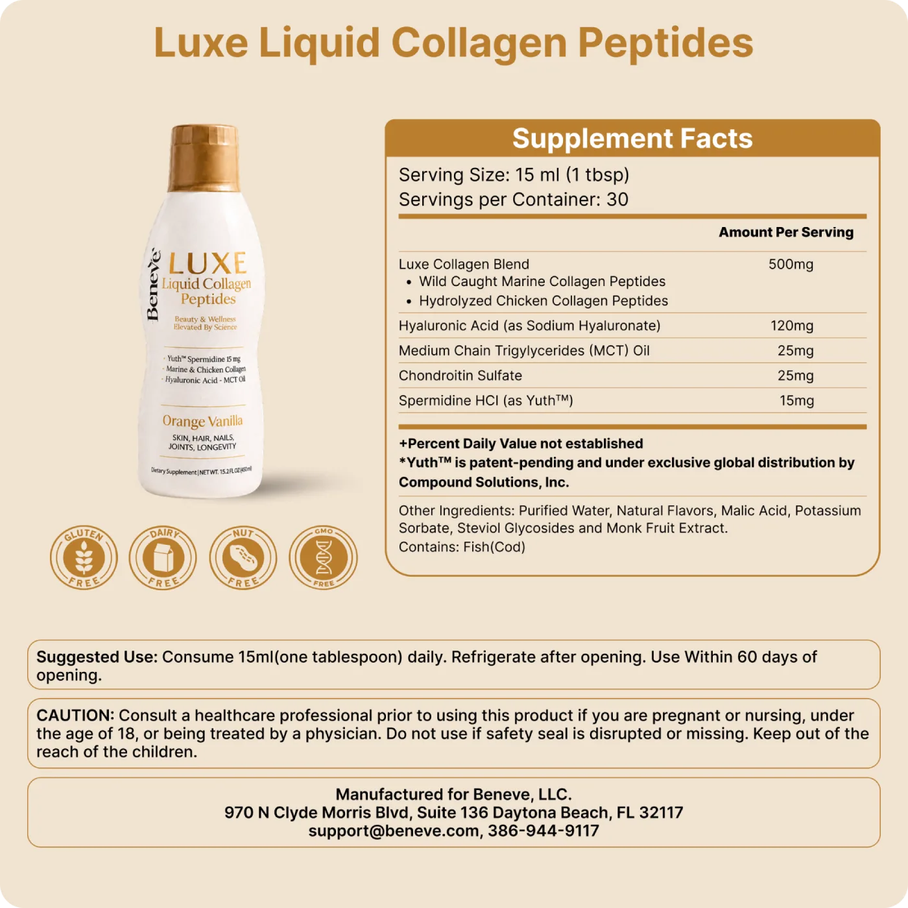

Firme y suave
Ayuda a apoyar una piel de aspecto más suave y firme.
La mitad de tu rutina que va por dentro
Un colágeno líquido con espermidina Yuth, formulado para apoyar un cabello, una piel, unas uñas y unas articulaciones saludables. Una cucharada al día, treinta porciones por botella, sabor naranja y vainilla.

Cinco cosas, con las palabras de la propia marca.
Ayuda a apoyar una piel de aspecto más suave y firme.
Apoya la hidratación de la piel y el equilibrio de su humedad.
Apoya un cabello, una piel, unas uñas y unas articulaciones saludables.
Ayuda a apoyar articulaciones, cartílago y tejido conectivo saludables.
La espermidina Yuth apoya la función celular normal y un envejecimiento saludable, como parte de un estilo de vida equilibrado.
Más que solo colágeno

Péptidos de colágeno marino de pesca silvestre (Tipo I) y péptidos de colágeno de pollo hidrolizado (Tipo II).
Beneve dice que el Tipo I es el más abundante en el cuerpo y lo relaciona con la hidratación, la elasticidad, el cabello y las uñas. El Tipo II lo relacionan con el cartílago y la estructura de la piel. Los dos están hidrolizados, que es lo que la marca quiere decir con fácil de absorber.

El colágeno da estructura y el ácido hialurónico ayuda a mantener la humedad. Juntos apoyan una piel de aspecto flexible.
El ácido hialurónico está en los dos productos: el sérum lo pone sobre tu piel, y este lo pone en tu dosis diaria.
Un compuesto estudiado por su papel en apoyar los procesos celulares y el bienestar en general.
Yuth tiene patente en trámite y distribución global exclusiva de Compound Solutions, Inc. Es el ingrediente que lo distingue de un colágeno común, y es el que la marca destaca primero en la etiqueta.

La condroitina trabaja junto al colágeno para las articulaciones y la movilidad. El aceite MCT ayuda al cuerpo a absorber y aprovechar el resto de la mezcla.
Endulzado con glucósidos de esteviol y fruta del monje, con sabor a naranja y vainilla. Sin gluten, sin lácteos, sin nueces y sin transgénicos, y contiene pescado (bacalao).
Ingredientes de primera
Consulta a un profesional de la salud antes de usar este producto si estás embarazada o en periodo de lactancia, si eres menor de 18 años o si estás bajo tratamiento médico. No lo uses si el sello de seguridad está roto o no está. Mantenlo fuera del alcance de los niños.
Es una cucharada al día y sabe a naranja y vainilla. Tómalo junto con algo que ya haces cada mañana, y termina la botella antes de juzgarlo.
Estas declaraciones no han sido evaluadas por la Administración de Alimentos y Medicamentos (FDA). Este producto no está destinado a diagnosticar, tratar, curar ni prevenir ninguna enfermedad.